Abstract
Audio generation, including speech, music and sound effects, has advanced rapidly in recent years. These tasks can be divided into two categories: time-aligned (TA) tasks, where each input unit corresponds to a specific segment of the output audio (e.g., phonemes aligned with frames in speech synthesis); and non-time-aligned (NTA) tasks, where such alignment is not available. Since modeling paradigms for the two types are typically different, research on different audio generation tasks has traditionally followed separate trajectories. However, audio is not inherently divided into such categories, making a unified model a natural and necessary goal for general audio generation. Previous unified audio generation works have adopted autoregressive architectures, while unified non-autoregressive approaches remain largely unexplored. In this work, we propose UniFlow-Audio, a universal audio generation framework based on flow matching. We propose a dual-fusion mechanism that temporally aligns audio latents with TA features and integrates NTA features via cross-attention in each model block. Task-balanced data sampling is employed to maintain strong performance across both TA and NTA tasks. UniFlow-Audio supports omni-modalities, including text, audio, and video. By leveraging the advantage of multi-task learning and the generative modeling capabilities of flow matching, UniFlow-Audio achieves strong results across 7 tasks using fewer than 8K hours of public training data and under 1B trainable parameters. Even the small variant with only ~200M parameters shows competitive performance, highlighting UniFlow-Audio as a potential non-auto-regressive foundation model for audio generation. Code and models will be available at https://wsntxxn.github.io/uniflow_audio.
Method Overview
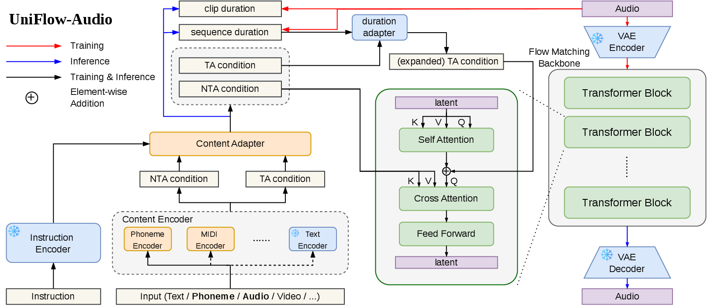
Overview of UniFlow-Audio. The content encoder and adapter transforms the input and task instruction to content embedding. Based on the predicted duration, the content embedding is expanded to time-aligned content embedding. A dual-fusion mechanism is applied: the latent is fused with the content by cross attention, and fused with time-aligned content by addition.
UniFlow-Audio v1.1 Samples
🎧 Text-to-Audio (T2A)
| Text input | Generated audio |
|---|---|
| Food and oil sizzling. | |
| A train horn honks with a train racing by. | |
| Birds call while another bird sings. | |
| A woman is speaking continuously. | |
| Thunder claps and rain falls hard, splashing on surfaces. |
🎼 Text-to-Music (T2M)
| Text input | Generated music |
|---|---|
| An electronic music piece performed by a DJ with heavy turntable use. | |
| A live Latin American salsa outro with brass instruments. | |
| An ukulele playing melody and arpeggiated accompaniment. | |
| A soul instrumental with a marimba melody, shimmering shakers, and punchy drums. | |
| An R&B song with male vocals. |
🔊 Audio Super-Resolution (SR)
Each spectrogram is paired with the audio shown directly beneath it.
| Low-resolution input | Super-resolved output |
|---|---|
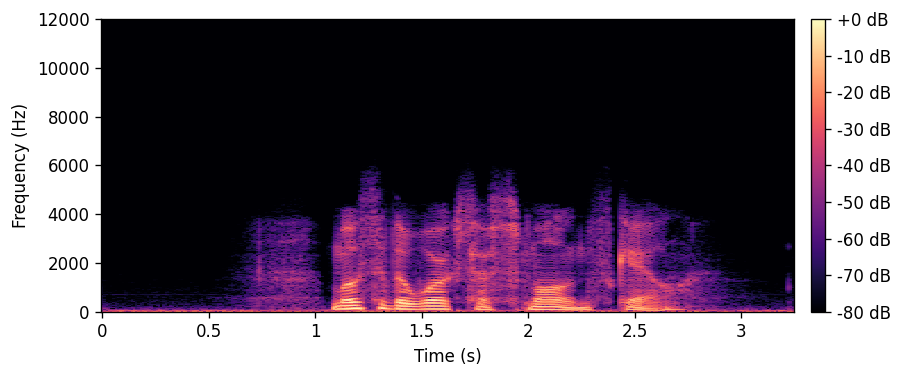 | 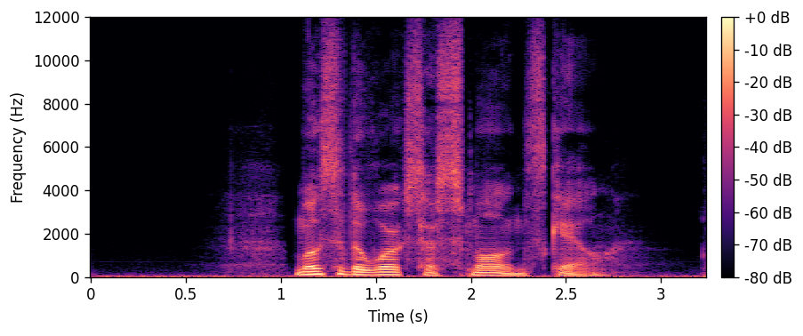 |
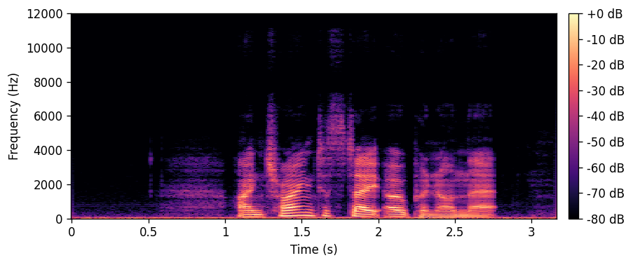 | 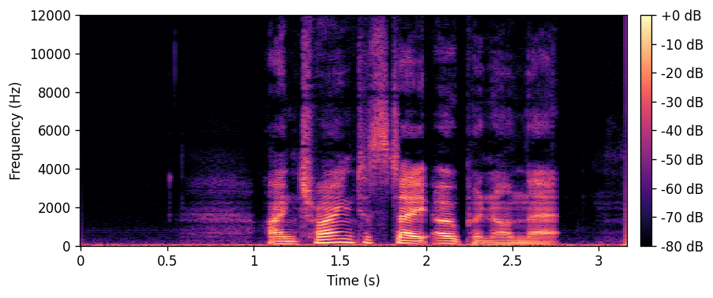 |
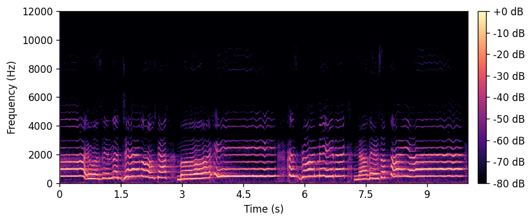 | 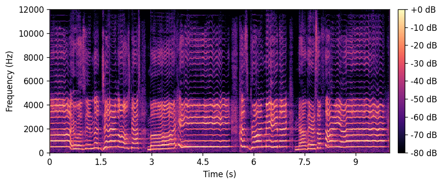 |
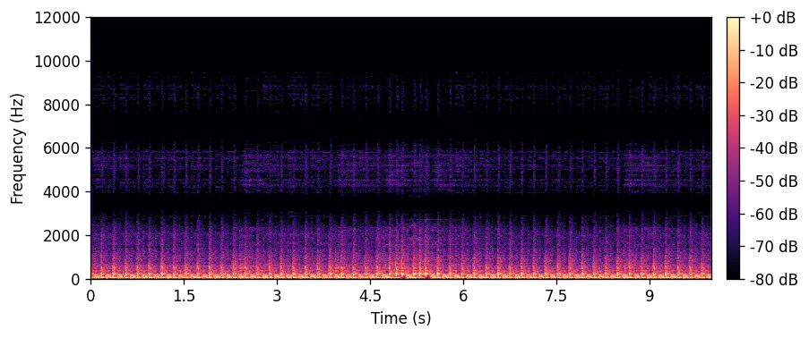 | 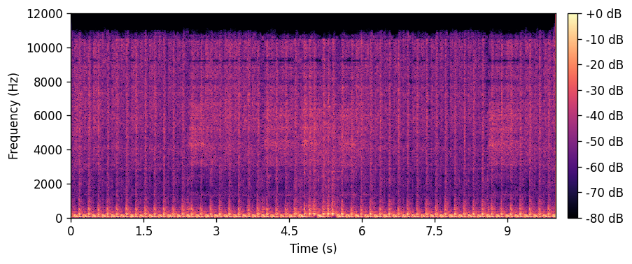 |
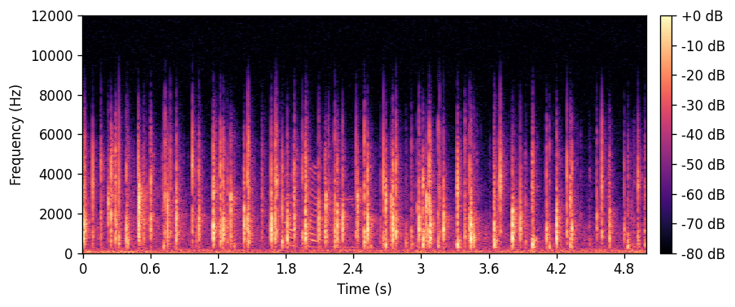 | 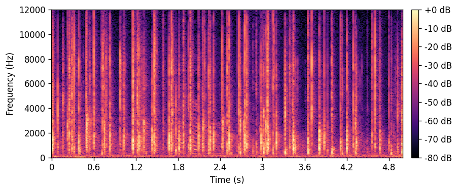 |
🎤 Speech Enhancement (SE)
| Noisy input | Enhanced output |
|---|---|
📹 Video-to-Audio (V2A)
Inputs are muted videos. Outputs are the same videos with audio generated by UniFlow-Audio v1.1.
| Muted video input | Video with generated audio |
|---|---|
🎙 Singing Voice Synthesis (SVS)
| Singer | Lyrics input | Generated singing |
|---|---|---|
| Alto-2 | 听过被诅咒的秘密没听过你 | |
| Soprano-1 | 遥想公瑾当年小乔初嫁了 | |
| Tenor-2 | 自以为是地表演着 | |
| Soprano-1 | 乱石穿空 | |
| Tenor-1 | 撑到一千年以后放任无奈 |
🗣️ Text-to-Speech (TTS)
| Text input | Reference voice | Generated speech |
|---|---|---|
| In short he becomes a “prominent figure in London Society” — and, if he is not careful, somebody will say so. | ||
| His death, in this conjuncture, was a public misfortune. | ||
| Either He calls ministers through the agency of men, or He calls them directly as He called the prophets and apostles. | ||
| As he flew, his down reaching, clutching talons were not half a yard above the fugitive's head. | ||
| They then renewed their journey, and, under the better light, made a safe crossing of the stable roofs. |
BibTeX
@article{xu2025uniflow,
title={UniFlow-Audio: Unified Flow Matching for Audio Generation from Omni-Modalities},
author={Xu, Xuenan and Mei, Jiahao and Zheng, Zihao and Tao, Ye and Xie, Zeyu and Zhang, Yaoyun and Liu, Haohe and Wu, Yuning and Yan, Ming and Wu, Wen and others},
journal={arXiv preprint arXiv:2509.24391},
year={2025}
}